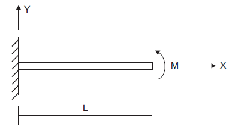
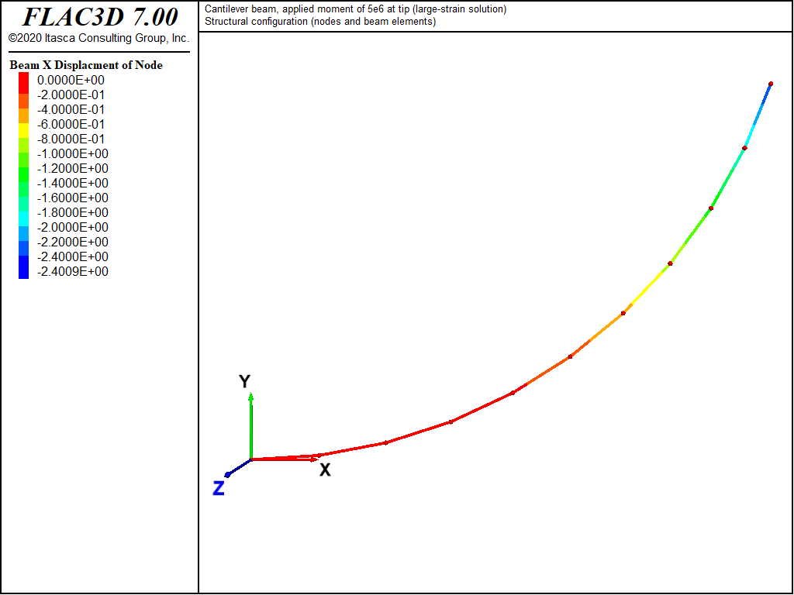

端部施加力矩的悬臂梁——梁单元
问题描述
注意
要在 FLAC3D 中查看该项目，请使用菜单命令 。选择 “Structure/Beam/Cantilever” 并选中 “Cantilever.f3prj” 载入。所用 主数据文件（main data files） 示于本例末尾。其余数据文件可在该项目中找到。
悬臂梁端部承受施加力矩，如 图 1（Figure 1） 所示。该问题是几何非线性的例子：变形显著改变荷载位置，因此平衡方程必须相对于变形后几何写出。这类问题可通过在大应变模式下运行 FLAC3D 求解。梁端大应变 \(y\) 方向挠度（假定材料保持线弹性）由 Cook 等（1989，第 529-531 页）给出为
| 其中： | \(E\) | = | 杨氏模量；以及 |
| \(I\) | = | 惯性二次矩（\(I\) = \(I_y\) = \(I_z\)）。 |

图 1：端部施加力矩的悬臂梁。
本例使用若干性质与加载条件：
| 横截面积（\(A\)） | 0.006 m3 |
| 杨氏模量（\(E\)） | 200 GPa |
| 泊松比（\(\nu\)） | 0.30 |
| 关于局部 \(y\) 轴的二次矩（I\(_y\)） | 200 × 10-6 m4 |
| 关于局部 \(z\) 轴的二次矩（I\(_z\)） | 200 × 10-6 m4 |
| 极惯性矩（\(J\)） | 0.0 |
| 梁长度（\(L\)） | 10 m |
| 端部施加的力矩（\(M\)） | 5 × 106 N-m |
对这些条件，理论端部挠度 \(v_{\rm tip}\) 由公式 (1) 给出为 5.477 m。
FLAC3D 模型由 10 个梁单元与 11 个节点构成。对所有节点施加对应梁理论行为的边界条件：即 \(z\) 方向无平动，绕 \(x\) 与 \(y\) 轴无转动。左端在全部六个自由度上完全固定，并在梁端节点施加与 \(z\) 方向对齐的力矩向量。
最终结构形态示于 图 2（Figure 2）。梁端 \(y\) 方向挠度等于 5.497 m，与解析解相差 0.36% 以内。


图 2：最终结构形态。
参考文献
Cook, R. D., D. S. Malkus and M. E. Plesha. Concepts and Applications of Finite Element Analysis, Third Edition. New York: John Wiley & Sons Inc. (1989).
数据文件
Cantilever.dat
model new
model title ...
'Cantilever beam, applied moment of 5e6 at tip (large-strain solution)'
; 创建梁并指定参数
struct beam create by-line (0,0,0) (10,0,0) segments=10
struct beam property young=2e11 poisson=0.3
struct beam property cross-sectional-area=6e-3 moi-z=200e-6 ...
moi-y=200e-6 moi-polar=0
; 边界条件
struct node fix velocity-z rotation-x rotation-y ; 约束所有非梁模态
struct node fix velocity rotation range position-x 0 ; 完全固定左端
struct node apply moment=(0,0,5e6) range position-x 10 ; 在端部施加弯矩
; 运行模型
model large-strain on
model solve ratio-local=1e-7
model save 'Cantilever'
| 这些内容对您有帮助吗？… | FLAC3D © 2019, Itasca | 原文更新于 2020 年 10 月 8 日 |
| 版权与免责声明 | ||